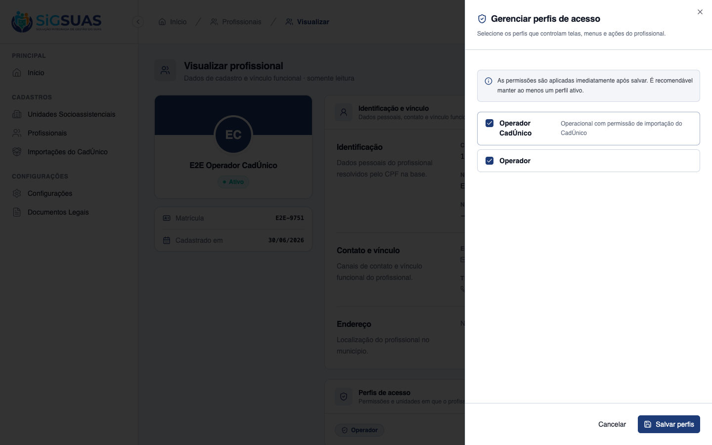
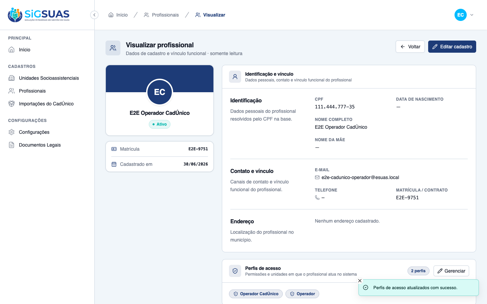
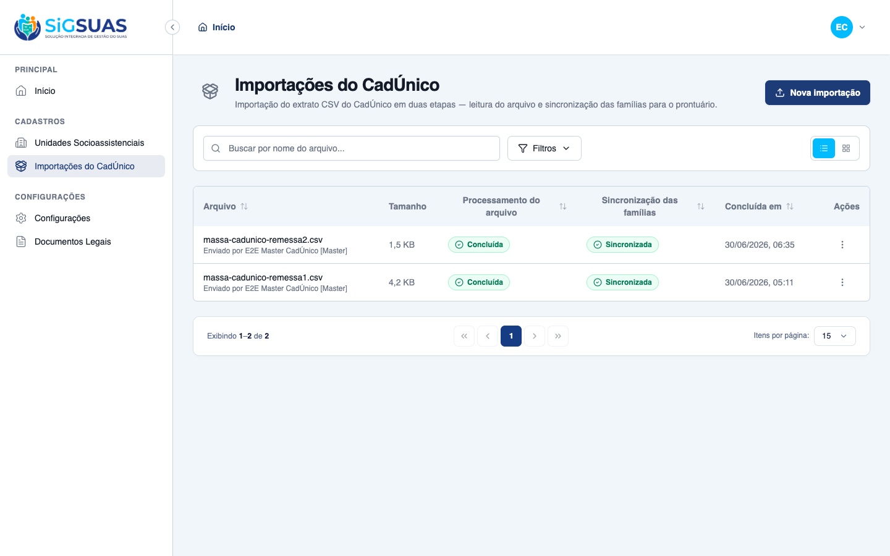
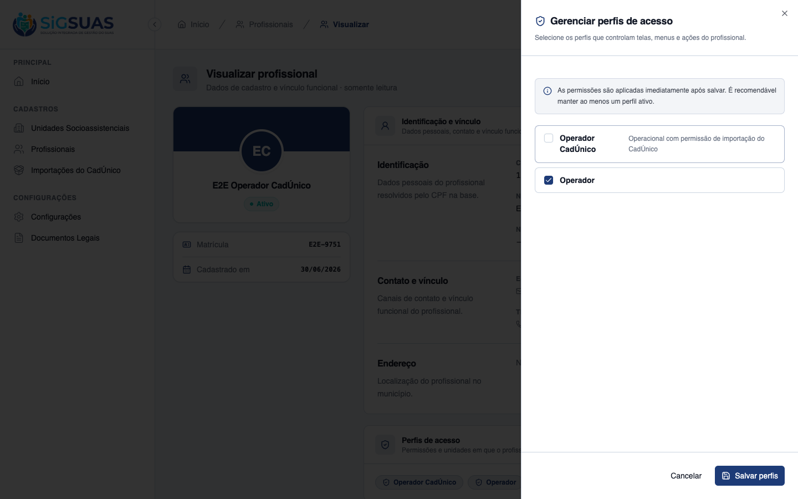

Relatório de Critérios de Aceite — HU #9751
Resumo
História focada na governança de acesso: o Master concede e revoga a permissão de importação do CadÚnico a um Profissional, exclusivamente via papéis (RN04). Foram verificados os 2 critérios de aceite (CA09 atribuição, CA10 revogação), ambos dirigidos ao vivo no frontend do tenant (client) e reforçados pela suíte Pest. Para a demonstração foi provisionado um Perfil de Acesso atribuível "Operador CadÚnico" (papel client carregando cadunico-imports.*), espelhando a diretiva da spec de "perfis que o Master escolher para operadores". Resultado: CA09 e CA10 ATENDIDOS — o efeito da sincronização de papéis é imediato, sem novo login/seed, refletindo na visibilidade do módulo e no gate 403.
| CA | Critério | Status |
|---|---|---|
| CA09 | Atribuição de permissão ao Profissional | ATENDIDO · navegador |
| CA10 | Revogação de acesso | ATENDIDO · navegador |
CA09 — Atribuição de permissão ao Profissional ATENDIDO · navegador
Critério (Gherkin): Dado que sou Master no tenant, Quando acesso a tela de Detalhes de um profissional específico e vinculo ao seu cadastro o Perfil de Acesso que possui os direitos de "Importação do CadÚnico", Então ao salvar a alteração, o Usuário associado a esse profissional passa a ter acesso imediato ao módulo de importação do CADUNICO.
Como foi testado: Logado como Master (CPF 52998224725), abrir Cadastros › Profissionais › E2E Operador CadÚnico → seção Perfis de acesso → botão Gerenciar. No drawer, marcar o perfil Operador CadÚnico (Perfil de Acesso que carrega cadunico-imports.*, ao lado do perfil base Operador já vinculado) e clicar Salvar perfis. Em seguida, sair e entrar como Operador (CPF 11144477735) para conferir o acesso ao módulo.
- Drawer "Gerenciar perfis de acesso" oferece o Perfil de Acesso "Operador CadÚnico" como atribuível; ao marcá-lo e salvar, exibe o toast "Perfis de acesso atualizados com sucesso" e o profissional passa a contar "2 perfis".
- Efeito imediato no backend (sem novo seed): o Usuário do profissional passou a ter <code>cadunico-imports.index</code> e <code>cadunico-imports.store</code>; o vínculo em user_tenant_role passou de [operador] para [operador, operador_cadunico].
- Ao entrar como Operador, o item "Importações do CadÚnico" aparece no menu e a tela do módulo carrega normalmente (cabeçalho, "Nova importação" e tabela de histórico) — acesso imediato confirmado.
- Pest (apêndice): "it syncs roles granting and revoking in diff" cobre a concessão por sincronização de papéis.



CA10 — Revogação de acesso ATENDIDO · navegador
Critério (Gherkin): Dado que sou Master no tenant, Quando acesso a área de Detalhes/Gerenciamento do profissional e removo/desvinculo o perfil correspondente às rotinas do CadÚnico, Então assim que as alterações são salvas, o acesso às telas de importação e ao histórico de lotes é bloqueado e ocultado imediatamente para o Usuário correspondente.
Como foi testado: Logado como Master, reabrir o detalhe do profissional E2E Operador CadÚnico → Gerenciar → desmarcar o perfil Operador CadÚnico (mantendo o perfil base Operador) → Salvar perfis. Depois, sair e entrar como Operador para conferir o bloqueio: ausência do módulo no menu e acesso direto à rota /app/cadunico-imports.
- Ao desmarcar "Operador CadÚnico" e salvar, exibe o toast "Perfis de acesso atualizados com sucesso" e o profissional volta a contar "1 perfil".
- Efeito imediato no backend: o Usuário perdeu <code>cadunico-imports.*</code>; o vínculo em user_tenant_role voltou a [operador].
- Ao entrar como Operador, o item "Importações do CadÚnico" some do menu (ocultado) e o acesso direto a <code>/app/cadunico-imports</code> retorna a tela "403 — Acesso negado" — bloqueio imediato confirmado.
- Pest (apêndice): "it syncs roles granting and revoking in diff" e "it hides the module from an operador without the permission (CA03)" cobrem a revogação e o gate por permissão.



Anexo — Cobertura automatizada (Pest — ProfessionalRoleControllerTest + CadunicoImportControllerTest)
PASS Tests\Feature\Api\Client\ProfessionalRoleControllerTest ✓ it lists current and assignable roles (CA01) 0.58s ✓ it syncs roles granting and revoking in diff (CA02/CA03) 0.04s ✓ it is idempotent when the same set is resent (RN04) 0.03s ✓ it revokes all roles when role_ids is empty (RN11) 0.03s ✓ it rejects assigning a role equal to or above the master hierarchy… 0.03s ✓ it rejects assigning an inactive role (RN02) 0.03s ✓ it returns 404 for a professional from another tenant 0.03s ✓ it forbids an operador from managing professional roles (MASTER-onl… 0.03s PASS Tests\Feature\Api\Client\CadunicoImportControllerTest ✓ it validates a well-formed CSV and returns an upload token (CA01) 0.07s ✓ it rejects a CSV from a different município (RN01) 0.03s ✓ it rejects validation when the tenant has no município configured 0.03s ✓ it rejects a CSV with a divergent header (CA02) 0.03s ✓ it blocks validation when an import is already active (RN11/CA07) 0.03s ✓ it confirms the import and queues stage 1 (HU02) 0.03s ✓ it records the executor label with [Master] suffix when not a profe… 0.03s ✓ it rejects store with an unknown upload token 0.03s ✓ it does not sync an import that is not completed 0.03s ✓ it queues stage 2 when the import is completed (Etapa 2 manual) 0.03s ✓ it blocks sync when another batch is active in the tenant (RN11) 0.03s ✓ it lists only the tenant own history (CA12) 0.04s ✓ it returns 404 for a cross-tenant import (CA12/RN10) 0.03s ✓ it hides the module from an operador without the permission (CA03) 0.03s ✓ it stores a generic failure message without leaking exception detai… 0.03s Tests: 23 passed (77 assertions) Duration: 1.46s